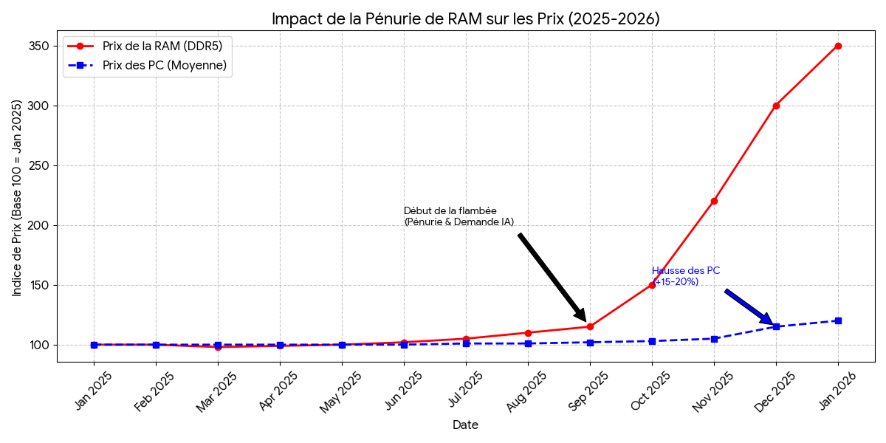

Pendant la fin de 2025, plusieurs fabricants de mini-PC comme Minisforum ont décidé d’augmenter les prix de tous leurs modèles équipés de RAM et de SSD,
non pas pour ajouter de nouvelles fonctionnalités, mais uniquement parce que le coût de la mémoire vive avait tellement augmenté qu’ils ne pouvaient plus
absorber la hausse dans leur marge habituelle. Ce type d’ajustement est inhabituel : il montre que la hausse des prix de la RAM ne touche plus seulement
les composants isolés, mais se répercute directement sur le prix de vente des appareils complets, y compris des ordinateurs compacts souvent choisis pour
leur bon rapport qualité-prix.
Le graphique montre l’évolution mensuelle approximative du prix moyen de kits de RAM DDR5-5200 entre juillet 2024 et décembre 2025,
révélant une tendance à la hausse marquée sur cette période. On observe que les prix ont connu des fluctuations, avec une augmentation
globale significative, reflétant la tension sur le marché mondial de la mémoire vive, provoquée par une demande élevée et des contraintes
d’approvisionnement. Cette montée des prix a des conséquences directes pour l’industrie informatique : les fabricants de PC et de mini PC,
tels que Dell, HP ou Minisforum, ont dû répercuter ces surcoûts sur leurs produits, entraînant une hausse des tarifs pour les consommateurs et
une pression sur les marges des entreprises qui n’ont pas pu absorber entièrement les coûts. À plus grande échelle, ces tensions peuvent freiner
l’adoption de nouveaux équipements, ralentir certains projets IT et favoriser les fabricants de mémoire eux-mêmes, dont les revenus profitent de cette
flambée des prix, accentuant ainsi les déséquilibres dans la chaîne d’approvisionnement technologique.
L'impact direct : le prix des ordinateur

Titre : graphique montrant l'evolution du prix des ordinateurSource : Ozérim et DropReference pour la RAM et Tom's Hardware et IDC pour les PC
Le graphique illustre l’évolution du prix moyen des ordinateurs suite à la pénurie de RAM. On observe qu’immédiatement après la flambée des prix
de la mémoire, les prix des ordinateurs, jusque-là relativement stables, commencent à augmenter progressivement. Cette tendance initiale montre
que les fabricants répercutent rapidement les surcoûts des composants sur le prix final des produits. Les analystes du monde entier prévoient que
cette hausse n’en est qu’à ses débuts et pourrait s’accentuer si les tensions sur le marché de la mémoire persistent. Cette situation pourrait
également pousser les constructeurs à revoir leurs configurations standard (par exemple, réduire la quantité de RAM incluse) ou à différer certains
lancements, tandis que les consommateurs pourraient se tourner vers des alternatives moins coûteuses ou des modèles d’occasion. À plus long terme,
ces fluctuations mettent en évidence la forte dépendance des prix des PC à celle des composants clés, soulignant l’importance d’une gestion
efficace des chaînes d’approvisionnement et des stocks.
Definitions
Mémoire vive (ou RAM)
La mémoire vive est l'espace de stockage temporaire d'un ordinateur. Contrairement au disque dur, elle est volatile
(les données s'effacent à l'extinction) mais extrêmement rapide, permettant au processeur d'accéder instantanément aux informations nécessaires pour faire tourner
les logiciels.
RAM (Random-Access Memory)
La RAM est l'acronyme anglais pour la mémoire vive. Le terme "Random-Access" (accès aléatoire)
signifie que le processeur peut accéder à n'importe quelle donnée stockée dans cette mémoire en un temps identique, peu importe sa position,
ce qui garantit une grande fluidité au système.
HBM (High Bandwidth Memory)
La HBM est un type de mémoire haute performance où les puces sont empilées verticalement (3D).
Cette structure permet d'être beaucoup plus proche du processeur et de réduire la consommation d'énergie tout en offrant une vitesse de transfert
massive par rapport à la RAM classique.
Bande passante
En informatique, la bande passante désigne la quantité maximale de données qui peut être transféréepar seconde entre la mémoire et le processeur.
Plus elle est élevée, plus l'ordinateur peut traiter de gros volumes d'informations rapidement, ce qui est crucial pour l'IA.
Processeur (CPU / GPU)
Le processeur est le "cerveau" de la machine qui exécute les instructions des programmes. Pour l'intelligence artificielle,
on utilise souvent des processeurs graphiques (GPU) qui ont besoin d'une mémoire très rapide pour effectuer des milliards de calculs simultanés.
Intelligence Artificielle (IA)
L'Intelligence Artificielle est un domaine de l'informatique visant à créer des systèmes capables d'imiter l'intelligence humaine
(apprentissage, raisonnement). Ces technologies sont gourmandes en données et nécessitent des architectures mémoires spécifiques pour fonctionner
sans goulot d'étranglement.
Minisforum
Minisforum est une entreprise technologique chinoise spécialisée dans les miniPC : elle conçoit, fabrique et
commercialise des petits ordinateurs compacts performants pour usages personnels et professionnels. Elle a été fondée en 2018 et est basée à
Shenzhen (Chine).Les produits de Minisforum sont destinés à offrir des performances élevées dans un format réduit, couvrant plusieurs séries
de miniPC pour différents besoins (travail, jeux, AI, etc.).C’est une entreprise privée active sur les marchés mondiaux dans le domaine du matériel
informatique.